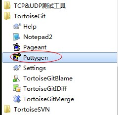
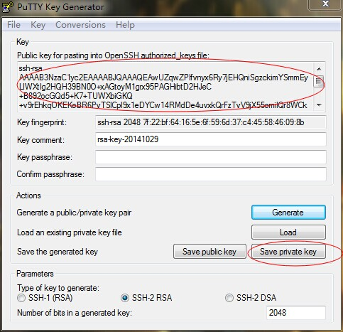
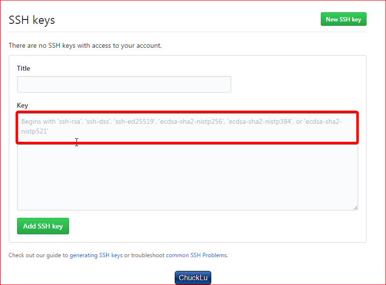
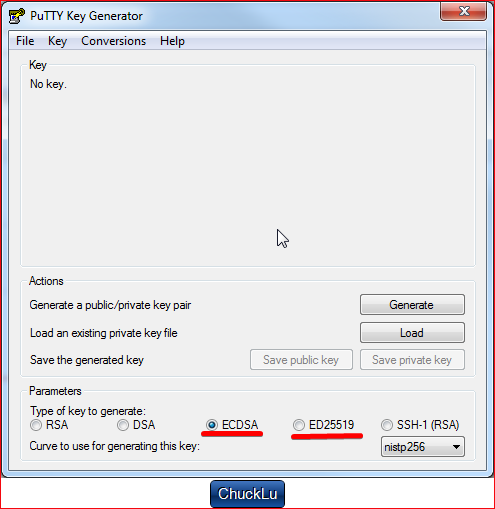
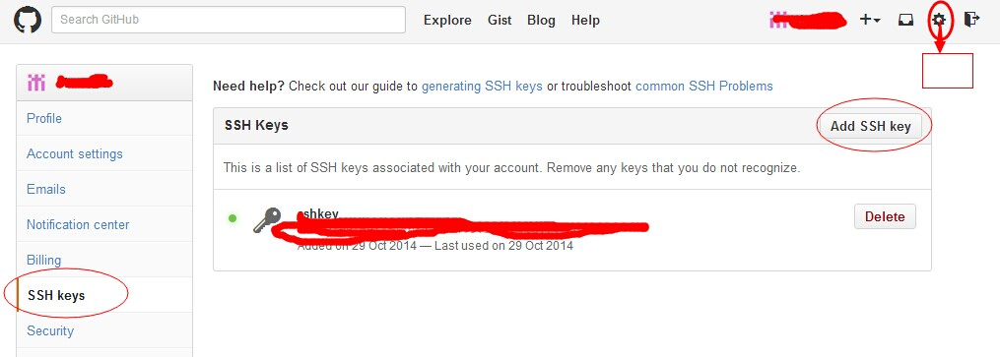

1.github上支持三种方式进行项目的clone https,ssh,subversion
https://github.com/用户名/版本库.git
ssh的方式 git@github.com:用户名/版本库t.git 此篇文章针对于这种
https://github.com/用户名/版本库
2.生成密钥
2.1 找到TortoiseGit自带的Puttygen工具
2.2 打开之后，选择Generate(生成的过程中记得移动鼠标)
2.2.1 2017年05月14日更新
新版本的putty key generator的界面不一致了，并且github添加公钥的地方也有新提示了
2.2.1.1下面是github添加公钥的地方，要注意提示
2.2.1.2下面的putty key generator的新界面，只有第三个和第四个是符合要求的
2.3生成完毕之后，将上面的公钥设置到github上面
github的设置界面，有sshkeys，添加进去就可以了
2.4 保存一下私钥到本地
保存之前，先设置一个私钥的密码【上面的passphrase】，目的是防止其他人使用你的私钥胡乱提交
2.5将私钥加到远端设置中
注意1 远端只有在.git版本库中才能查看
注意2 填写的URL是以git@github.com开头的